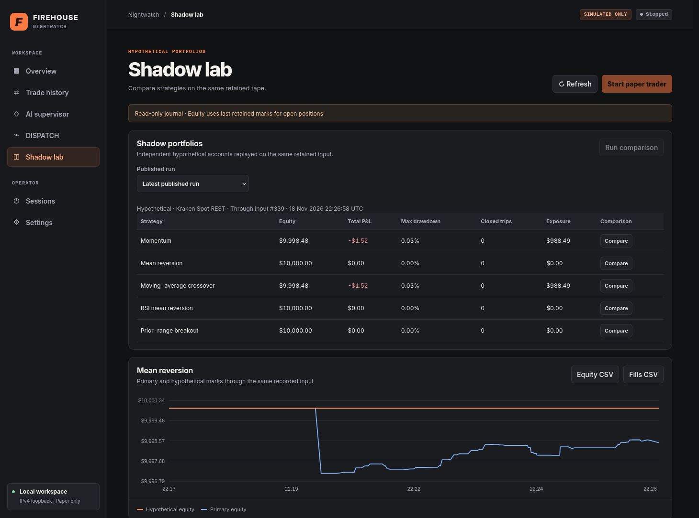

Verified archives preserved at Alpha deployment
INDEPENDENT SOFTWARE ENGINEERING PROJECT
Built to test.
Engineered to verify.
A local-first trading research platform combining deterministic historical simulation, risk engineering, and experimental AI intelligence.
GOLDEN GOOSE · RESEARCH DEVELOPMENT
Research Release
SIMULATED_ONLY
FIREHOUSE ALPHA
VERIFIED ENGINEERING
Measured progress. Not promises.
Historical release milestones from Nightwatch and the persistent research Arena.
Focused release checks passed
Protected evolutionary families
Unchanged Prime benchmark
At the Alpha deployment (8ea84b0), eight focused checks covered exact lineage inheritance across campaigns and a service restart, family continuity, Prime preservation, archive recovery, and private PWA access. The results do not establish profitability. Independent validation remains pending.
ABOUT THE PROJECT
Research with a paper trail.
Firehouse is a simulated trading research workstation. Nightwatch unifies operator controls, historical Arena experiments, and verified evidence while keeping production execution simulated only.
Persistent evolution preserves exact configuration fingerprints and ancestry. Refinement, Hybridization, and Exploration remain represented; Firehouse Prime stays unchanged and no experimental configuration is promoted automatically.
01
Nightwatch command centerSix workspaces, six themes, responsive layouts
02
Historical ArenaMatched simulated portfolios and integrated generation results
03
ARCHIVIST + DISPATCHResearch findings alongside independent market and risk intelligence
04
QuickWriteAsynchronous strategy selection; Python remains the execution engine
INSIDE THE ENGINE
Firehouse in Action
Explore a real Firehouse simulation using synthetic market data.
BTC-USD Market Replay
Synthetic data · Rules-only paper trading

Synthetic market data only. No live trading or actual investment performance represented.
SPECTATOR + ALPHA · NIGHTWATCH
One command center for simulated research.
Nightwatch brings the current market view, historical Arena, verified generation results, ARCHIVIST research, DISPATCH intelligence and operator controls into a responsive browser interface.

Nightwatch Control Center
Six workspaces for the simulated paper trader, QuickWrite decisions, Arena research, ARCHIVIST, sessions and settings.

Mobile Command
Responsive Android browser/PWA access over the existing private HTTPS route. Authenticated non-mutating navigation remains available.

Historical Lab
Simulation, latest verified generation results, all competitors and Prime, plus expandable prior-generation history.
GOLDEN GOOSE · OPERATION FIREHOUSE TURBO
Faster research. Independent verification.
Golden Goose extends Firehouse into six distinct strategy research lineages, supported by parallel historical simulation and independently verified portfolio results.
Verified research generations
Simulated participant runs
Total campaign duration
Average time per generation
Observed in one internal seven-day historical replay campaign using six competitors and Prime across 50 generations. The same training window was reused. These are computational research measurements, not independent investment results.
Firehouse Turbo
Shared market intelligence, indicator caching, memory-aware worker allocation and bounded parallel portfolio simulation.
Independent replay
Portfolio results are independently verified before publication. Research acceleration must preserve deterministic accounting and evidence integrity.
Protected research windows
Training, exploration, sealed benchmarks and independent validation are separated through historical data reservation policies. Experimental Yahoo Finance integration expands available research data.
SIX PROTECTED STRATEGY LINEAGES
Different approaches. One research framework.
Trend
Breakout
Reversion
Range
Volatility
Volume
Prime remains a separate comparison benchmark. Experimental strategies are not automatically promoted into operational trading.
Economic viability remains unproven.
The latest campaign produced no profitable participants after trading costs. Current research focuses on meaningful strategy evolution, better opportunity selection and disciplined exits.
DEVELOPER ENGINEERING · LIVING HANDOFF V2
Preserve the project. Not just the code.
Complex AI-assisted development requires more than source backups. Living Handoff preserves project knowledge, engineering decisions, repository state and structural source references across development conversations.
LIGHTWEIGHT CONTINUITY
95.5%Smaller handoff archive
Observed in one internal Firehouse acceptance test.
Previous handoff
34.16 MiB
Living Handoff V2
1.55 MiB
Approximately 22 times smaller.
Repository records
Files inventoried
Source files indexed
Continuity acceptance
Institutional memory
Project objectives, development checkpoints, operating procedures and engineering decisions provide continuity beyond source code.
Structural source indexing
Function signatures, classes, imports, line references and source fingerprints help new development agents locate relevant implementations.
Verified publication
Incremental indexing, SHA256 manifests, ZIP integrity checks and atomic publication support reliable handoff generation.
Existing projectCode and knowledge
Living HandoffIndex and verify
New AI sessionRestore context
Acceptance measurements describe the internal Firehouse implementation, not a benchmark of the portable edition. The public utility passed separate synthetic indexing, credential-exclusion and archive verification checks.
DEVELOPMENT HISTORY
From prototype to persistent research.
v0.5 — Research baseline
Historical paper replay, local AI experiments, diagnostics, and strategy benchmarks.
v0.6 — AI experimentation
Past-only indicator snapshots, structured responses, and Ollama advisory modes.
V7 — Deterministic scheduling
Rule-based historical strategy scheduling and experimental regime selection.
V7.1 — Safety and verification
Regression-tested emergency handling, gap protection, exposure limits, and multi-symbol accounting.
ARCHIVIST V0.3 — Evidence integrity
Immutable evidence publication, descriptor-anchored verification, symlink protection, and recovery assessment. Full repository regression suite: 469 passing tests.
SPECTATOR — Nightwatch and Arena
Responsive six-workspace command center, private PWA access, campaign progress, verified research archives, and integrated Historical Lab.
ALPHA — Persistent Evolution
Exact configuration inheritance across campaigns and service restarts, protected Refinement/Hybridization/Exploration families, unchanged Prime benchmark, recovered historical ancestors, and consolidated generation results.
Breakout Lite
Historical Arena researchers can select family exposure targets. A short Kraken replay confirmed simulated exposure and reconciled trading costs. The cutover preserved 1,062 Research Library archives. Independent profitability and physical Android live synchronization remain unverified.
Golden Goose — Six strategy lineages
Distinct strategy research, economic entry diagnostics and protected benchmark comparisons.
Operation Firehouse Turbo
Parallel simulation and independent verification. A 50-generation campaign completed 350 participant runs in 16 minutes 45 seconds.
Living Handoff V2
Successful lightweight AI continuity acceptance. Portable utility published with synthetic functional and archive integrity checks.
WHAT COMES NEXT
The development roadmap.
Operation Golden Harvest
Planned research into meaningful evolution, cost-aware opportunity selection, disciplined exits and independent strategy qualification.
QuickWrite 2.0 + ALWAYS ONLINE
Future strategy-selection research and service/PWA reliability work. Current production QuickWrite configuration remains unchanged.
COMPUTE GRID + ACCESS CONTROL
Research worker expansion and future owner-control work. Neither is implemented by Alpha.
Evidence before claims.
Firehouse demonstrates persistent, verified research workflows and development continuity. Sustainable profitability remains unproven. All trading remains simulated.
Back to top ↑